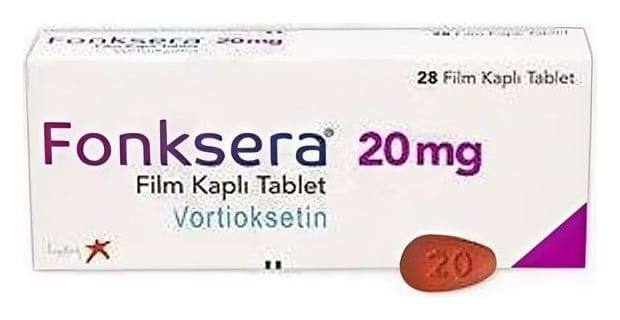

Fonksera 20 mg Film Kaplı Tablet, Tablet, 28 Adet

Ne için kullanılır
KT · Bölüm 1FONKSERA, vortioksetin adlı etkin maddeyi içerir. Vortioksetin, antidepresan adı verilen bir ilaç grubuna dahildir.
FONKSERA 20 mg, kırmızı renkli, badem biçiminde, 5x8,4 mm boyutlarında, bir yüzeyinde “TL” diğer yüzeyinde “20” basılı film kaplı tablet şeklindedir.
FONKSERA; 28 ve 56 film kaplı tablet içeren ambalajlar halinde piyasaya sunulur. Tüm ambalaj büyüklükleri piyasada olmayabilir.
FONKSERA, erişkinlerde majör depresif olayların tedavisinde kullanılı r.
FONKSERA’nın; üzüntülü olma hali, içsel gerginlik (endişeli hissetme), uyku bozuklukları ve uyuyamama, iştah azalması, konsantre olmada güçlük, kendini önemsiz hissetme, sevilen aktiviteleri yapma isteğini kaybetme ve kendini yavaşlamış hissetme dahil, geniş bir yelpazedeki depresif belirtileri azalttığı gösterilmiştir.